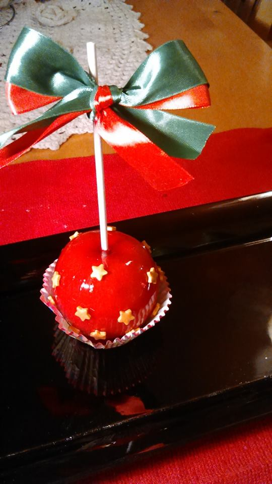

Simple and pretty. Make a nice Christmas favor. 
Just make a basic toffe apple For 12 small red apples, stalks removed 3 cups caster sugar 1/4 cup liquid glucose 1 teaspoon white vinegar 1/2 teaspoon red food colouring Sprinkles Baking paper Clean the apples and push a lolly stick into the top of each and set aside. Put all the the ingredients into a saucepan and cook for 15 minutes. Dip in the apples and place onto the baking paper. After cooling, decorate the apples with stars sprinkles or any other decorating sprinkle. Use Christmas colours ribbons to tie a nice bow on the lolly stick to decorate.